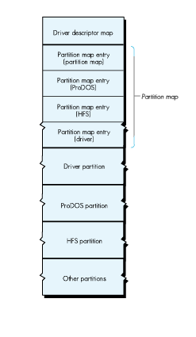
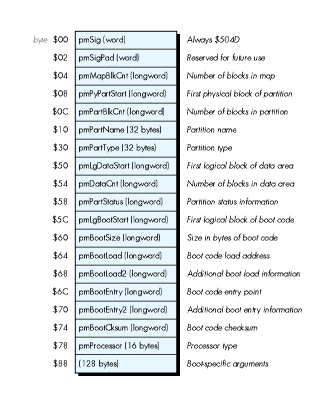
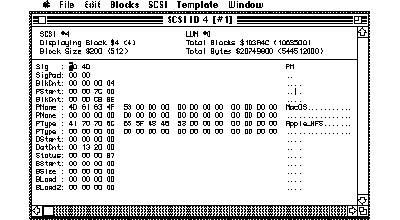
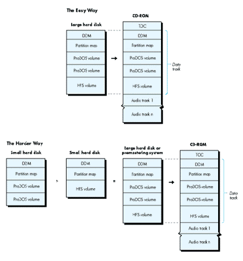
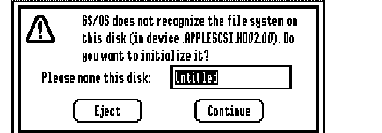

Since the original Phil & Dave's Excellent CD was released, containing both Macintosh
HFS and Apple II ProDOS volumes, DTS has gotten many questions about how it was
done. Some ask just out of curiosity, while others want to create their own
mixed-partition CD-ROMs. This article gives a detailed account of how any developer
can prepare a mixed-partition hard disk whose image can be pressed onto CD-ROM.
The process of producing a CD-ROM disc containing both HFS and ProDOS volumes is
relatively simple and straightforward. It's facilitated by the fact that Apple's operating
systems recognize the data track of a CD-ROM as if it were a SCSI hard disk. You
prepare a hard disk exactly as you wish it to appear on CD-ROM, ship it off to a CD
production company, and they send you back a CD.
Mixing partitions is easiest if you have a 600+ MB hard disk, but you can also mix
partitions if you have two or more smaller hard disks. We'll get down to the brass
tacks of this procedure after a preliminary discussion of why you might want to mix
HFS and ProDOS partitions, and some background information about partitions that you
need to know if you're to fully understand the procedure.
Why would a developer want to create a CD-ROM that mixes HFS and ProDOS volumes?
For one thing, combining HFS and ProDOS volumes on one CD is a way for developers of
Apple II applications to make their applications and files available both locally and
through AppleShare ® fileservers (which only read CD-ROMs in HFS format) with
minimal additional effort. For another, mixing partitions is a way to distribute
applications and files so they can be read by both the Macintosh and the Apple II.
Perhaps a more obvious solution to the problem of creating a CD-ROM readable by
both the Macintosh and the Apple II would be to convert all volumes to the ISO 9660
format, described in Brian Bechtel's article in this issue. A CD-ROM in ISO 9660
format is readable not only by both the Macintosh and the Apple IIGS but by other
operating systems as well.
For developers who rely on CD-ROM to store large amounts of information accessible
by only one application, this is adequate and in some cases preferred. On the other
hand, for developers who wish to use CD-ROM to distribute multiple applications,
graphics and sound files, or other files that the user can browse through and launch
using the Finder (such as Apple's Developer CD Series and the public domain CDs being
released by user groups), using the ISO 9660 format presents certain problems.
Storing files in ISO 9660 format strips the Finder of its ability to read desktop
information about those files. On the Macintosh desktop, applications on ISO-format
CD-ROMs are shown as generic application icons, documents as generic document
icons, and folder and file placement information is lost. In addition, although there are
supported extensions to ISO to handle Apple II GS filetype and auxtype information,
software is not available at this time to apply these extensions before pressing.
Another reason for choosing to use native file formats rather than ISO 9660 is that
conversion into the latter format involves an additional step in the process of pressing
a CD-ROM: a premastering system must be used to create a tape that a production
company then uses to create a CD-ROM. If your CD-ROM will be used only on an Apple
computer, there's really no need for you to go through this additional step.
Partitions are logical volumes on a hard disk.
ProDOS is limited to 32 MB volumes, so under the ProDOS file system, a 20 MB hard
disk would usually have only one ProDOS volume on it, while a 650 MB hard disk
would probably be partitioned into several ProDOS volumes. HFS can handle very large
volumes, so there is rarely a need for more than one HFS volume on one disk. (Note
that the Macintosh driver currently supplied with Apple HD SC and CD SC drives will
support only one HFS partition. Most large third-party drives will support multiple
HFS partitions. Apple does not recommend shipping CD- ROM with multiple HFS
partitions.)
A disk is partitioned and the partitions are initialized with software that is included on
the system disks or with the hard disk drive. Advanced Disk Utility (ADU) for the
Apple II GS, included with System Disk 5.0 or later, will satisfy most Apple II
partitioning needs. It supports all drives that follow the Apple extensions to the ANSI
SCSI standard, and most that follow the ANSI SCSI standard faithfully, even without the
Apple extensions. For the Macintosh, partitioning software is usually included with a
hard disk drive.
SCSI hard disks store block allocation information (that is, number and size of the
partitions and drivers on the disk) in the first few physical blocks of the disk. The
hard disk driver creates logical volumes from this information at boot time and
mounts these partitions as volumes on the desktop. Figure 1 illustrates the layout of a
typical hard disk with mixed partitions.

Figure 1 The Layout of a Typical Hard Disk With Mixed Partitions
Physical block 0 of the disk contains the driver descriptor map (DDM), which
describes the drivers on the disk. When the disk is mounted, this information is used
to load the necessary drivers, as detailed in Inside Macintosh , volume V, page 576.
The Macintosh requires that a driver be resident on the disk; the Apple II supports
drivers if they are resident on the disk, while not requiring them to be.
Starting at physical block 1 of the disk is the partition map. Each partition on the disk
is described in its own partition map entry (PME) in this partition map. A PME,
which occupies one block and is built when the partition is initialized, consists of a
series of data fields describing the size and state of a specific partition. With the
exception of physical block 0, every block on the disk must be accounted for in a PME,
as belonging to a partition. The partition map is itself a partition and contains a PME
describing itself. The PME format is shown in Figure 2.

Figure 2 The Format of a Partition Map Entry
In condensed form, the partition map for a hard disk with both HFS and ProDOS
partitions looks like this:
Block | pmMapBlkCnt | pmPyPartStart | pmPartBlkCnt | pmPartName | pmPartType |
1 | 6 | 1 | 3F | Apple | APPLE_PARTITION_MAP |
2 | 6 | 40 | 20 | Macintosh | APPLE_DRIVER |
3 | 6 | 60 | 10000 | /PRODOS.1 | APPLE_PRODOS |
4 | 6 | 10060 | 10000 | /PRODOS.2 | APPLE_PRODOS |
5 | 6 | 20060 | 28000 | MacOS | APPLE_HFS |
6 | 6 | 48060 | D6800 | Extra | APPLE_FREE |
pmMapBlkCnt is a count of valid PMEs on the hard disk. This longword is contained in
each valid PME. If it is modified in one, it must be modified in all PMEs. If a partition
has been added manually (that is, with a SCSI block editor) and is not recognized by the
operating system, the cause is usually an incorrect value in pmMapBlkCnt.
pmPyPartStart is the address of the first physical block of the partition. If the first
physical block of a partition (logical block 0) is at physical block $200 of the hard
disk, then reading block $20 of the partition actually reads physical block $220 of the
disk. pmPartBlkCnt is the size, in blocks, of the partition. The size of the last
partition on the disk is arrived at by subtracting the address in pmPyPartStart for
this partition from the total number of blocks on the disk.
pmPartName is the name of the partition. It serves to identify the partition and
should not be confused with the volume name.
pmPartType is the partition type and can contain (but is not limited to) the
following:
APPLE_DRIVER | Partition contains a device driver |
APPLE_PARTITION_MAP | Partition contains a partition map |
APPLE_SCRATCH | Partition is unused and free for use |
APPLE_HFS | Partition contains Macintosh HFS volume |
APPLE_PRODOS | Partition contains Apple II ProDOS volume |
APPLE_FREE | Partition is unused and unusable |
APPLE_SCRATCH partitions are areas of the disk that are currently unused, but that
can be recognized and initialized by the operating system. In the process of creating a
mixed-partition disk, this is the type to assign to partitions that will later be
initialized in ProDOS format (assuming that HFS partitions are formatted first).
APPLE_FREE is the type to assign to partitions consisting of blocks that will not be
used but must be accounted for in order to fulfill the requirement that all blocks on the
disk belong to a partition.
When you go about mixing partitions, as described in the following section, you may
need to change some of the fields in a PME, and to copy blocks from one disk to another.
PMEs can be browsed and edited with SEDIT, a utility written at Apple by David
Shayer. Figure 3 shows a PME viewed in SEDIT. This utility also makes it easy to
perform block editing at a device level on SCSI hard disks. SEDIT can copy blocks on
the same or between separate devices, and provides nifty templates for editing blocks
of data. You'll find SEDIT included, along with documentation, on theDeveloper
Essentials disc. (A word to the wise: SEDIT also has the wonderful ability to scramble
any SCSI device that is connected, so be sure to look at the warning message under the
File menu and to read the documentation before trying anything you're not sure of.)

Figure 3 SEDIT View of the PME for the HFS Partition of A Disc Called Wanda
Now that you understand the layout of the disk and the importance of the partition map,
you're ready to mix your own partitions. You can choose to either include the same
information on both partitions (for example, large databases) or arrange the files so
that Apple II-specific information is on a ProDOS volume and Macintosh-specific
information is on an HFS volume. And you have a choice of whether to start out with
one large hard disk, or two or more smaller hard disks. The first way is easiest.

Figure 4 Two Ways to Create a CD-ROM
In the processes described here, every attempt has been made to let the existing
system software and utilities do the work, with a minimum of "twiddling" necessary
by the developer. This ensures that the CD-ROM will work properly and will be
compatible with future system software.
The simplest method to prepare a mixed-partition disk from which to press a CD is as
follows:
APPLE_SCRATCHpartition for each ProDOS
If you create two APPLE_SCRATCH partitions, the partition map will look
something like this:
Block | pmMapBlkCnt | pmPyPartStart | pmPartBlkCnt | pmPartName | pmPartType |
1 | 6 | 1 | 3F | Apple | APPLE_PARTITION_MAP |
2 | 6 | 40 | 20 | Macintosh | APPLE_DRIVER |
3 | 6 | 60 | 10000 | Scratch | APPLE_SCRATCH |
4 | 6 | 10060 | 10000 | Scratch | APPLE_SCRATCH |
5 | 6 | 20060 | 28000 | MacOS | APPLE_HFS |
6 | 6 | 48060 | D6800 | Extra | APPLE_FREE |
APPLE_SCRATCH partitions (that's
Warning: Do not initialize the HFS partition! The Finder will also want to
initalize the HFS partition, since it doesn't recognize it, and you may politely
decline by clicking Eject in the dialog box.

Figure 5 The Dialog Box to Initialize Partitions
Every time the GS Finder is launched (booting, quitting from an application,
and so forth) it will ask if you wish to initialize the HFS partition. This
annoying behavior will disappear when the CD- ROM with the image of the
hard disk is mounted, since it is write-protected.
The hard disk is now fully prepared. In our example, it contains two ProDOS
volumes and one HFS volume, which are fully initialized and ready for files to
be copied onto them.
MIXING PARTITIONS FROM SMALLER HARD DISKS
In cases where you wish to combine partitions from separate hard disks on one large
hard disk, more work is required, but it is certainly not impossible.
The same process I'm about to describe can also be done using a CD-ROM premastering
system that allows block manipulation by a Macintosh, but you will definitely need
technical assistance from the premastering system's engineer. With such a system, it
is possible to manually create partition maps and block copy the desired volumes over.
The end result is an image of a large hard disk identical to the image achieved by the
process described in the preceding section and below. As an example to illustrate the
process of combining smaller hard disks on a larger one, let's say we're starting with
two hard disks--one 80 MB hard disk formatted as a large HFS volume and one 80 MB
hard disk with two 32 MB ProDOS partitions. The partitioning utilities and system
software have already done most of the work for us: the partitions are initialized and
the partition maps built.
The partition map for our first hard disk, SCSI ID 1, looks like this:
Block | pmMapBlkCnt | pmPyPartStart | pmPartBlkCnt | pmPartName | pmPartType |
1 | 4 | 1 | 3F | Apple | APPLE_PARTITION_MAP |
2 | 4 | 40 | 20 | Macintosh | APPLE_DRIVER |
3 | 4 | 60 | 2626E | MacOS | APPLE_SCRATCH |
4 | 4 | 2626E | 4 | Extra | APPLE_FREE |
Note that because not all hard disks, even of the same capacity, have the same block
count, the value in PmPartBlkCnt for the last partition could differ if a different
hard disk were being used.
The partition map for our second hard disk, SCSI ID 2, looks like this:
Block | pmMapBlkCnt | pmPyPartStart | pmPartBlkCnt | pmPartName | pmPartType |
1 | 4 | 1 | 3F | Apple | APPLE_PARTITION_MAP |
2 | 4 | 40 | 10000 | /PRODOS.1 | APPLE_PRODOS |
3 | 4 | 10040 | 10000 | PRODOS.2 | APPLE_PRODOS |
4 | 4 | 20040 | 6292 | Extra | APPLE_FREE |
Manually combining the partition maps on paper, we come up with the desired
partition map for the large hard disk, SCSI ID 3:
Block | pmMapBlkCnt | pmPyPartStart | pmPartBlkCnt | pmPartName | pmPartType |
1 | 4 | 1 | 3F | Apple | APPLE_PARTITION_MAP |
2 | 4 | 40 | 10000 | /PRODOS.1 | APPLE_PRODOS |
3 | 4 | 10040 | 10000 | PRODOS.2 | APPLE_PRODOS |
4 | 4 | 20040 | 6292 | Extra | APPLE_FREE |
Block | pmMapBlkCnt | pmPyPartStart | pmPartBlkCnt | pmPartName | pmPartType |
1 | 6 | 1 | 3F | Apple | APPLE_PARTITION_MAP |
2 | 6 | 40 | 20 | Macintosh | APPLE_DRIVER |
3 | 6 | 60 | 10000 | /PRODOS.1 | APPLE_PRODOS |
4 | 6 | 10060 | 10000 | /PRODOS.2 | APPLE_PRODOS |
5 | 6 | 20060 | 2626E | MacOS | APPLE_HFS |
6 | 6 | 462CE | D8592 | Extra | APPLE_FREE |
What remains is to combine all of the partitions on the third hard disk. To do so, we
first copy block 0 (the DDM) from hard disk 1 to hard disk 3. Then we copy the
partition map from hard disk 1 to hard disk 3. We copy physical blocks 3 and 4 from
hard disk 1 to physical blocks 5 and 6 on hard disk 3.
From hard disk 2, we copy physical blocks 2 and 3 to blocks 3 and 4 on hard disk 3.
The final partition map is now in place, although the values in some of the fields are
incorrect. We use SEDIT to update the fields according to the manually created table,
remembering to update pmPyPartStart in each entry and PmPartBlkCnt for the last
partition on the disk (to adjust for the changed number of unused blocks in the
APPLE_FREE partition). Now hard disk 3 is ready to have the volumes copied to it.
Using the SEDIT Copy Blocks command, we copy the volumes from the smaller hard
disks to the proper locations on the large hard disk:
From SCSI ID To SCSI ID From Block To Block # of Blocks 1. 1 3 0 0 1 DDM 2. 1 3 40 40 20 Mac Driver 3. 1 3 60 20060 2626E HFS Partition 4. 2 3 40 60 10000 ProDOS partition 5. 2 3 10040 10060 10000 ProDOS partition
After we copy the DDM from hard disk 1 to hard disk 3 it is no longer valid, so we
zero out the DDM's first 24 bytes. (If we planned to use hard disk 3 from the
Macintosh and not as a master for a CD-ROM, we would update these bytes to make the
DDM valid for hard disk 3.) We also zero out the first 8 bytes (the boot block) of the
HFS partition to ensure that the CD doesn't attempt to boot.
The large hard disk is now fully prepared and ready for shipment to the CD production
company.
If after reading this article you're eager to try creating your own mixed-partition
CD-ROM, you'll want to refer to the sidebar on CD-ROM production companies in
Brian Bechtel's article in this issue. There you'll find names and addresses of places to
send your hard disk. Brian's paper CD-ROM and the Macintosh Computer , found on the
accompanying Developer Essentials disc, covers basic details of cost and time required
to get a CD-ROM pressed.
And here's a final note to round out your understanding of mixed- partition CD-ROMs.
When the CD-ROM resulting from the process described in this article is mounted, the
partitioned volumes on its data track are recognized and mounted on the desktop. The
Macintosh will currently mount only the first HFS partitioned volume that it finds.
The Apple II will try to mount the HFS volume but will not find a file system
translator to read it with, and so will effectively ignore it.
LLEW ROBERTS became an Apple person by accident, although we're not sure exactly
which accident that was. (Lately there have been several.) He says he works on just
too many different things to actually specify what he does for a living. We think he
may be a DTS engineer, because he was recently overheard answering questions
regarding mixing HFS and ProDOS partitions on a single drive. His only REAL hobby is
collecting originals and English translations of Japanese manga and anime (comic
books and animated video). His favorite is AppleSeed. Llew also dabbles in subliminal
suggestion. Can you find the hidden message in his article? You'll know for sure when
you awaken in the middle of the night craving some manga or a CD-ROM drive. *
Thanks to Our Technical Reviewers: Bryan Atsatt, Matt Gulick, Jim Luther,
Dave Lyons, Jim Reekes, Dave Shayer